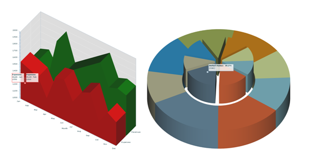

IBM® ILOG Elixir delivers 3D charts that can be displayed
in either orthographic projection or oblique projection. Adjustable
parameters are: elevation, rotation, depth, and light direction.
The following types of 3D chart are available:
ILOG Elixir 3D charts
are based on Adobe® Flash® Builder™ 4 and
to be fully functional the following features require its installation:
